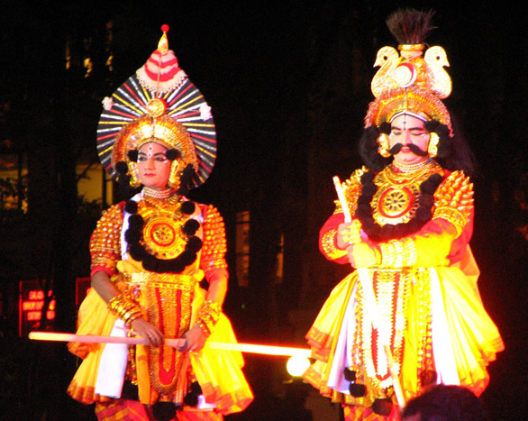

Yakshagana feels like mythology coming alive under the night sky. With dramatic costumes, vibrant makeup, and powerful music, the performers transform into gods, demons, and heroes. The romance here is epic and theatrical. It’s not quiet or subtle—it’s intense, emotional, and larger than life. Every movement, every expression is exaggerated to convey courage, love, conflict, and devotion. It feels like stepping into a world where stories are not told—they are lived.
Yakshagana originated in the coastal regions of Karnataka, especially Udupi and Dakshina Kannada. • Dates back around 400–500 years • Combines dance, music, dialogue, and storytelling • Stories are mainly taken from epics like the Ramayana and Mahabharata Traditionally: • Performed in open fields or temple grounds • Shows often last the entire night • Served as a way to educate and entertain rural communities
Yakshagana is a mix of multiple art forms: • Elaborate Costumes Heavy headgear, layered clothing, and ornaments • Dramatic Makeup Bright colors and bold facial designs to represent characters • Music & Rhythm Live orchestra with drums (chende) and singing • Dialogue & Acting Performers improvise lines while staying within the story Dance Movements : Strong, energetic steps matching the rhythm
Yakshagana performers are highly trained artists. • Training begins at a young age in Yakshagana troupes (melas) • Requires mastery of acting, dance, and expression • Traditionally performed by men, but now women also participate It is a community-driven tradition, passed through generations.